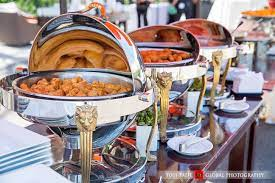
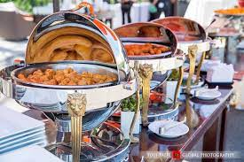

incredible india
Matches are made in heaven and it is on earth that they are joined in the bond of togetherness. Marriage embarks the unification of two souls, it is the journey towards a happily ever after. Talking of marriages and not taking into account Indian weddings is like a faux pas. India is a land of diversity that boost of vibrant cultures and traditions. With plethora of rituals and traditions, a big fat Indian wedding is considered as an epitome of glam
The different type of religions and cultures spread across India is the reason why marriages in the country differ from region to region. Be it a north, south east or west region wedding, Indian marriages are celebrated with great gusto and fervor. The beauty of the vibrant Indian wedding traditions is surely to sweep you off your feet. The different types of weddings in India are reminiscent of the rich culture and traditions of the country. No doubt that the extravagant wedding traditions with all the taam jhaam is what adds on to the beauty of the weddings. Here are some of the quirky wedding traditions that happen only in a desi Indian wedding. Check em’ out people!
Quirky Wedding Traditions From Incredible India
1 Bengali Weddings
2 bangali/p>
3 Bihari Wedding
4 Tamil Wedding
5 Gujarati Wedding
Bengali Weddings
Malyali Wedding
Bihari Wedding
Tamil Wedding
The groom running away from a wedding is a thing that would create panic at the wedding but trust us this is more of a fun filled tradition at Tamil wedding. Wait what? Sounds bizarre, right! Believe it or not Tamilians have a tradition known as ‘Kaashi Yatra’ where the groom is supposed to walk out of the mandapam before the start of the rituals. He then has to decide whether he wants to opt for a life of a sanyasi or live the life of a married man. And that is when the father of the bride pleads before the groom and convinces him to marry is daughter. Apparently the groom ends up giving in and marrying the bride. The Kaashi Yatra is a tradition packed with full on family drama.
Gujarati Wedding
Gujju’s are sweet people and their weddings rituals are just as sweet. An essential gujarati tradition that most people are well versed is that a mother-in-law pulls the nose of the groom as he arrives at the gate of the wedding with his baraatis. However there is another tradition that everyone is not familiar with, it is the custom of ‘MadhuParka’ which is an interesting ceremony. As per the tradition of ‘MadhuParka’ a groom’s feet is washed with milk and honey post which he is made to drink it. Gujaratis surely do take the no wastage of food pledge seriously, right!
wedding food
Weddings in general are a time to rejoice the union of two souls and gorge into good food! South Indian weddings aren’t replete without the lunch being served on the ‘Thalai Vazhai Ilai’ known as the raw banana leaf in English. The large leaf, loaded with delicacies, is a must in every marriage. There are way too many dishes served in a south Indian wedding. Let’s check out the 20 Best South Indian Food served at the wedding for lunch.
 

india dress
for the ceremony, most brides wear a traditional lehenga or a saree wedding dress. Lehenga: an ensemble comprised of an elaborate (and often heavy) skirt, a cropped or long blouse called the choli, and a dupatta that is draped over the head or shoulders.